报表管理
HAP 框架的报表功能集成了开源的 UReport2。UReport2 是基于 Apache-2.0 开源协议的中式报表引擎。
建议在使用 HAP 的报表功能前，首先查阅 UReport2 文档，熟悉如何使用。
支持数据库：MYSQL，ORACLE，SQLSERVER
由于 Ureport2 本身设计的原因，对内存大小要求较高，所以 HAP 的报表功能不适用于数据量较大的情况。
PS：在使用 IDE 开发的时候建议设置一个较大的运行内存。
功能描述
3.3.0-RELEASE之后新增功能，可实现套打报表。
使用说明
报表设计
首先进入 报表管理/报表设计界面，点击数据源，选中内置数据源
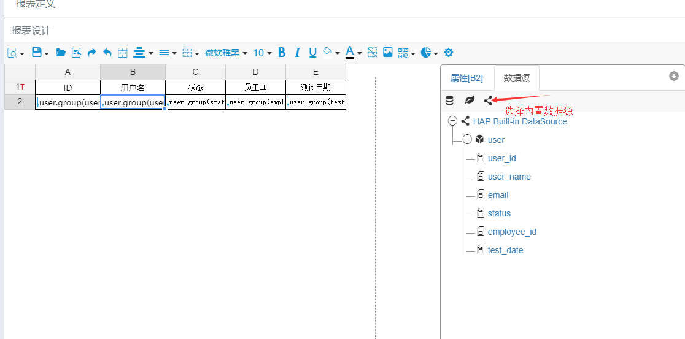
然后在数据源上点击右键添加数据集，定义报表的SQL和查询参数
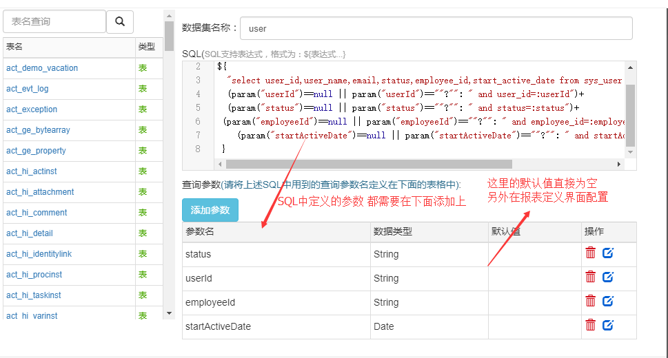
选中单元格，点击属性，设计报表内容
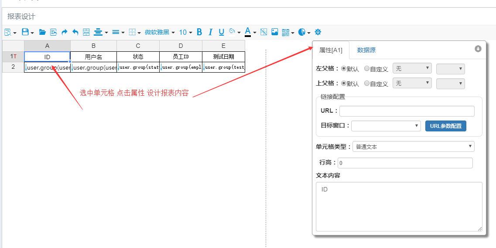
设计好报表内容后，点击保存，即可保存报表设计文件。该文件可以在报表定义时使用。
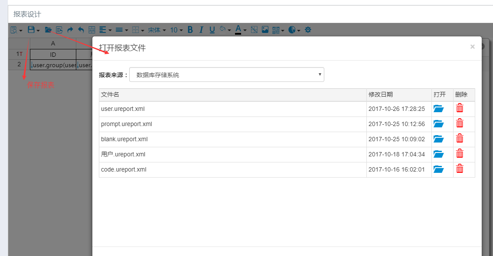
注意事项
设计界面属于 UReport2 自带界面，建议首先阅读 UReport2 文档，熟悉如何使用。
SQL 表达式动态传参示例： ${ "select user_id,user_name,email,status,employee_id,start_active_date from sys_user where 1=1 "+ (param("userId")==null || param("userId")==""?"": " and user_id=:userId")+ (param("status")==null || param("status")==""?"": " and status=:status")+ (param("employeeId")==null || param("employeeId")==""?"": " and employee_id=:employeeId")+ (param("startActiveDate")==null || param("startActiveDate")==""?"": " and start_active_date=:startActiveDate")+" order by user_id asc" }
如果参数值有多个，添加参数时，参数类型需选择List类型
${ "select * from sys_role_b where 1=1 "+ param("roleId")==null || param("roleId")==""?"": " and role_Id in(:roleId)" }
如果报表设计的字段是日期类型，需要设置该字段的属性->格式化（yyyy-MM-dd-HH-mm:ss:ms），否则使用 导出功能时日期会是一串数字。
报表设计界面的参数默认值，不需要配置，如有需要，可在报表定义界面配置。
自定义SpringBean数据源
3.4.0-RELEASE 支持自定义 SpringBean 类型的数据源。UReport2 自定义 SpringBean 文档
示例如下：
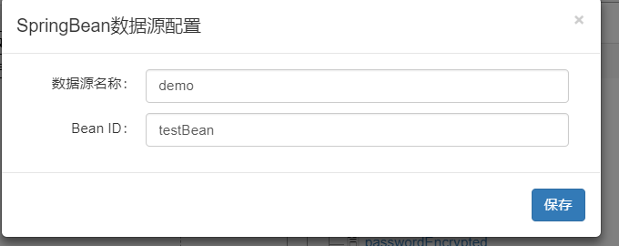
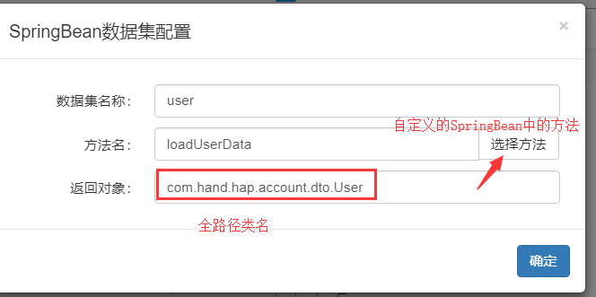
如果返回值为POJO集合 添加完数据集后需手动刷新才会显示字段
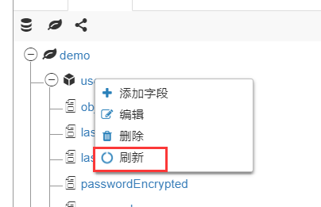
如果返回值为Map集合 需要手动添加字段
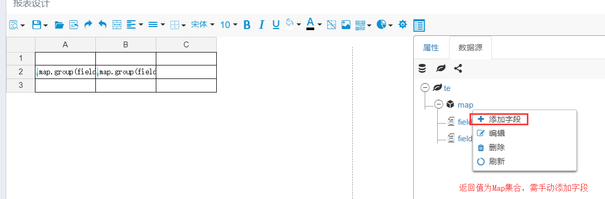
@Component
public class TestBean {
@Autowired
private IUserService userService;
@Autowired
private IEmployeeService employeeService;
public List<User> loadUserData(String dsName, String datasetName, Map<String, Object> parameters) {
Object s = parameters.get("userId");
List<User> userList = new ArrayList<>();
if (s != null) {
User user = new User();
if (StringUtil.isNotEmpty((String) s)) {
user.setUserId(Long.parseLong((String) s));
userList.add(userService.selectByPrimaryKey(null, user));
} else {
userList.addAll(userService.selectAll(null));
}
}
return userList;
}
public List<Map<String, String>> loadData(String dsName, String datasetName, Map<String, Object> parameters) {
List<Map<String, String>> list = new ArrayList<>();
Map<String, String> m = new HashMap<>();
m.put("field1","m1");
Map<String, String> m2 = new HashMap<>();
m2.put("field1","m2");
m2.put("field2","m22");
list.add(m2);
list.add(m);
return list;
}
}
报表定义
首先进入 报表管理/报表定义界面，点击新建，输入相应信息，点击保存，即可新增一条报表。如下图：
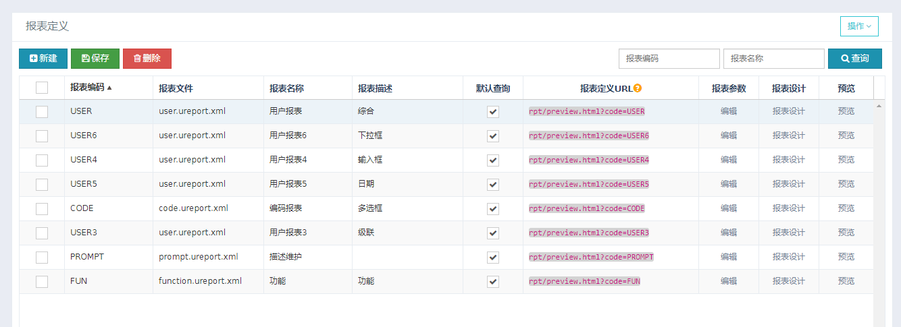
报表属性:
报表编码：报表的唯一标识，建议为大写的英文字母。
报表文件：报表设计时保存的文件。
报表名称：报表的名称。
报表描述：描述报表的功能。
默认查询：预览界面打开时，是否查询报表数据。
报表定义URL：用于资源管理挂载报表。
报表设计： 报表设计的另一个入口，方便直接打开文件，修改报表设计。
报表参数
打开报表参数界面，可设置报表预览时，条件查询的参数。见下图：
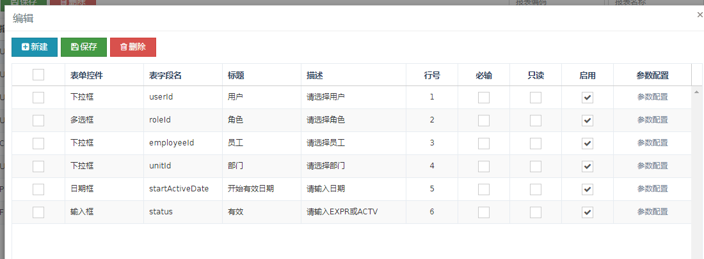
报表参数属性:
表单控件：参数的展现形式，有LOV，输入框，日期框，下拉框，多选框等。
表字段名：报表设计 SQL 中定义的参数名。
标题：预览时参数的标题。
描述：预览时描述该参数的功能。
行号：预览时描述该参数的位置，数字小的排在前面。
必输：控制预览时该参数是否必输，默认为否。
只读：控制预览时该参数是否只读，默认为否。
启用：控制预览时该参数是否启用，默认为是。
参数配置:
可设置报表参数的数据源，默认值，限制范围，级联等。
参数配置属性
数据类型：数据来源可选择LOV或快速编码提供数据，如果是LOV控件类型，则数据类型只能选择LOV。
数据来源：从LOV或快速编码获取数据为控件提供数据源，LOV、下拉框，多选框控件必须选择数据源。
默认类型：常量（直接设置默认值）、SQL语句（通过SQL设置默认值）、当前日期（取系统当前日期作为默认值）。
默认值：预览报表时，参数的初始值。
日期从：日期框控件可供选择范围的开始日期。
日期至：日期框控件可供选择范围的结束日期。
级联来源： 当前下拉框的父级下拉框来源。
级联字段： 根据当前数据源的哪个字段等于父级下拉框选中的值来筛选当前下拉框的数据。
SQL 语句注意事项
当默认类型选择为 SQL 语句，Lov 控件需返回 text 和 value 字段,其他控件只需返回 value 字段，日期类型返回字段格式为yyyy-MM-dd。
返回字段必须取别名as text 或as value。
支持IRequest的动态参数，HAP 内置的有当前登录人的userId，roleId，userName，companyId，employeeCode，locale。
如下图：
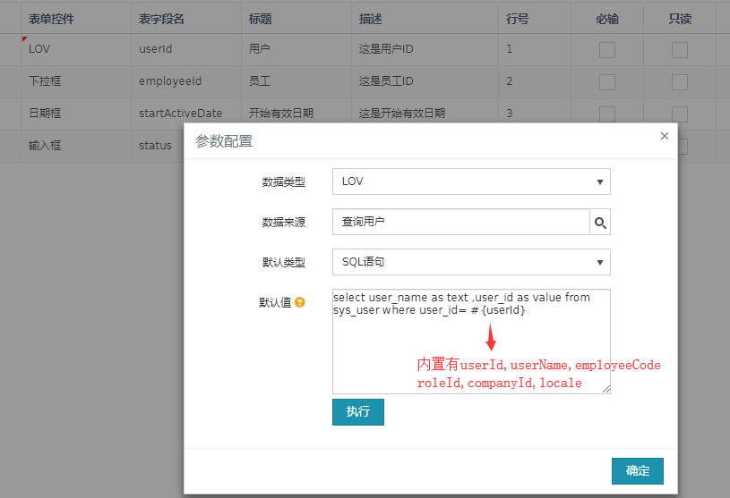
点击执行，可看到SQL执行效果
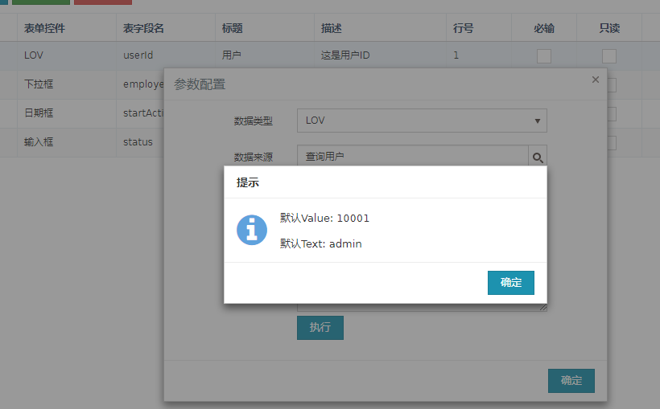
下拉框级联示例
下拉框级联时，父级下拉框的行号需在子级下拉框的行号前面，kendoui级联API
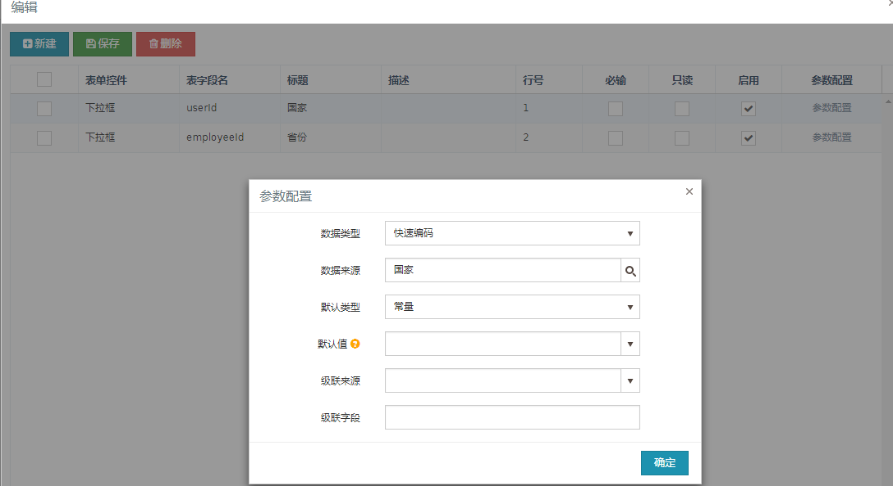
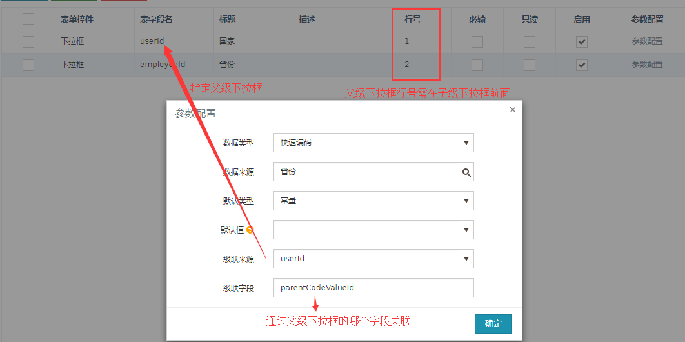
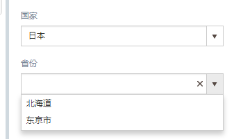 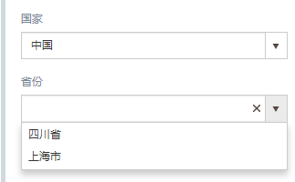
预览
打开预览界面，可在线预览报表，如果设置了参数，可实现条件查询，实时预览结果。见下图：
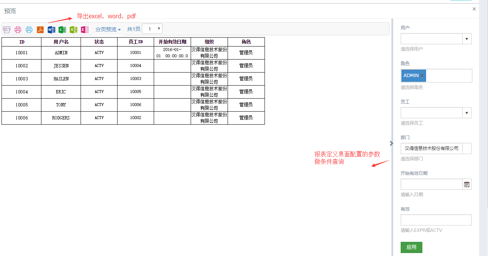